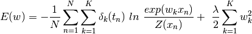
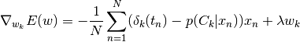
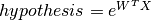
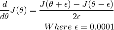
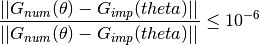

Qn1 : Scipy Implementation of Softmax Regression¶
In this question we implement the softmax regression with scipy library. We evaluate the digit recognition task from the mnist data.
1 Cost & Gradient¶
In this question I completed two functions softmaxCost and softmaxPredict in the script softmax.py.
For multiclass logistic regression, with L2 regularization the cost is given by

Also the gradient is given by:

The code snippet to calculate cost and gradient is given below:
X = data
z = theta @ X
N = data.shape[1]
delta = groundTruth
hyp = np.exp(z-np.amax(z, axis=0, keepdims=True)) # to prevent overflow
prob = hyp / np.sum(hyp, axis = 0)
cost = np.multiply(delta, np.log(prob))
cost = -1/N * np.sum(cost)
weight_decay = 1/2 * decay * np.sum(theta**2)
cost = cost + weight_decay
# now find gradient of cost function
thetagrad = - (delta - prob) @ X.T / N + decay * theta
# Unroll the gradient matrices into a vector for the optimization function.
grad = thetagrad.ravel()
2 Vectorization¶
I have used all the vectorized code.
3 Ground Truth¶
The ground truth (or delta) is a matrix M such that M[c,n] = 1 if sample n has label c, and 0 otherwise.
The code to calculate ground truth matrix is given below:
from scipy.sparse import coo_matrix
numCases = data.shape[1] # e.g. 28 * 28 = 784 (data has shape 55k, 784)
groundTruth = coo_matrix((np.ones(numCases, dtype = np.uint8),
(labels, np.arange(numCases)))).toarray()
4 Overflow¶
To calculate the hypothesis term ”  ” when the exponent is very high the exponential will give numerical overflow. To prevent this I subtracted the maximum value of exponent for a given class as shown below:
hyp = np.exp(z) # may have overflow
hyp = np.exp(z-np.amax(z, axis=0, keepdims=True)) # to prevent overflow
5 Numerical Gradient¶
From definition of derivative, the numerical derivative of cost function is

6 Gradient Checking¶
It is good practice that whenever we implement a learning algorithm, we should always check the implemented gradients with the numerical gradients. To calculate implemented gradient we use the function softmaxCost(theta, numClasses, inputSize, decay, data, labels) and to calculate the numerical gradient we use the function computeNumericalGradient(J, theta)
Then we calculate the relative error of these two quantites using the formula

- In order to perform gradient checking we should use the command::
- python3 softmaxExercise -d
Then we will get error of order e-10. Also note that, to just test the numerical gradient while debugging the code we have reduced the size of the input data matrix in the code softmaxExercise.py:
if FLAGS.debug:
inputSize = 8
np.random.seed(100)
images = randn(8, 100)
labels = randint(0, 10, 100, dtype = np.uint8)
7 Training¶
We used the MNIST training data to train our model. In mnist there are 60k training examples with example having 28 * 28 = 784 number of pixel values. One example is 28 * 28 pixel size gray scale image.
In this program we took 5k values for validation set and 55k values for training case.
We also note that in the original data website http://yann.lecun.com/exdb/mnist/ the data are given in binary format, but in our homework the data is in npy format so that the numpy can read easily load these datasets.
I used two of the scipy library modules to train our model. One model is scipy.optimize.fmin_l_bfgs_b and another model is scipy.optimize.minimize.
The links are given here
https://docs.scipy.org/doc/scipy-0.14.0/reference/generated/scipy.optimize.fmin_l_bfgs_b.html
Particularly I used the parameters maximum number of iterations 100 and method L-BFGS-B to fit the model.
The code snippet to fit the model is given below:
# Fit the model and get theta (theta is flat array)
theta, _, _ = fmin_l_bfgs_b(softmaxCost, theta,
args = (numClasses, inputSize, decay, images, labels),
maxiter = 100, disp = 1)
# Method 2 Using minimize function from scipy.optimize
theta = scipy.optimize.minimize(softmaxCost,
theta,
args = (numClasses, inputSize, decay, images, labels,),
method = 'L-BFGS-B',
jac = True,
options = {'maxiter': 100}).x
8 Testing¶
We test the model trained by trainig examples from mnist dataset, on the test examples from the mnist dataset. The test dataset has 10k examples with each example image having pixel size 28 * 28 = 784.
I got 92.6 % accuracy on the test set. The code snippet is given below:
def softmaxPredict(theta, data): return np.argmax(data.T @ theta.T, axis=1)
# Get prediction for test data
theta = np.reshape(theta, (numClasses, inputSize))
pred = softmaxPredict(theta, images)
acc = np.mean(labels == pred)
print('Accuracy: %0.3f%%.' % (acc * 100)) # 92.560%.